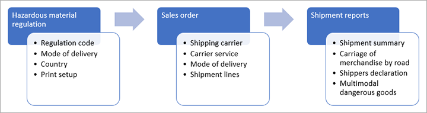

Anfragen und Berichte zu Gefahrstoffen
Important
Dynamics 365 for Finance and Operations hat sich zu speziell entwickelten Anwendungen entwickelt, mit denen Sie bestimmte Geschäftsfunktionen verwalten können. Weitere Informationen zu diesen Änderungen finden Sie im Dynamics 365-Lizenzierungshandbuch.
Important
Die hier aufgeführten Funktion sind alle oder teilweise im Rahmen einer Vorschauversion verfügbar. Inhalt und Funktionsweise unterliegen Änderungen. Weitere Informationen zu Vorschauversionen finden Sie in den FAQ zu Dienstupdates für One Version.
Microsoft Dynamics 365 Supply Chain Management bietet verschiedene Berichte, die sich auf Gefahrstoffe beziehen. Viele dieser Berichte sind erforderlich, damit Sie während der Lieferung und der Lagerung die verschiedenen Gefahrstoffvorschriften einhalten können.
Alle diese Berichte mit Ausnahme des Berichts Multimodale Gefahrgüter verwenden die Lieferart, die für diese Lieferung definiert ist, um Vorschriften zu finden, die verwendet werden müssen, um den Versandtext für Artikel zu drucken. Die Lieferart ist dem Spediteur und dem Spediteurdienst zugeordnet. Daher müssen Sie einen Spediteur und einen Spediteurdienst einrichten und diese mit einer Lieferart verknüpfen. Die Lieferart hängt mit der Gefahrstoffverordnung zusammen.
Die folgende Abbildung zeigt die Abfolge der Aktivitäten, die auftreten, wenn das System Gefahrstoffberichte erstellt.

Gefahrengüter-Berichterstellung einrichten
Wenn Sie gewöhnlich Artikel versenden, die gefährliche Stoffe enthalten, müssen Sie spezifische Berichte erstellen, um die Sicherheit zu gewährleisten und die Vorschriften für gefährliche Stoffe einzuhalten. Gehen Sie zum Einrichten von Berichten folgendermaßen vor.
Wechseln Sie zu Lagerortverwaltung > Einstellungen > Lagerortverwaltungsparameter.
Öffnen Sie die Registerkarte Berichte. Im Inforegister Parameter des Gefahrstoffberichts legen Sie die folgenden Felder fest.
Abschnitt Feld Beschreibung Multimodale Gefahrengüter Bestimmungscode Wählen Sie die Vorschrift aus, die verwendet werden soll, wenn ein Bericht für Multimodale Gefahrgüter generiert wird. Lagerbestandsgrenzen für gefährliche Stoffe Bestimmungscode Wählen Sie die Vorschrift aus, die bei der Bewertung der Bestandsgrenzen verwendet werden soll. Beförderung von Handelsware auf der Straße CMR-Gruppenprodukt CMR bedeutet „krebserregende, mutagene und reprotoxische Substanzen“. Legen Sie diese Option auf Ja fest, um das System so zu konfigurieren, dass bestimmte Warnungen und Meldungen gedruckt werden, die sich auf den Umgang mit diesen Substanzen beziehen. Beförderung von Handelsware auf der Straße Gefahrengüter-Gruppenbeschreibung Geben Sie den Text bestimmter Warnungen ein, die sich auf CMR und die Beförderung von Waren auf der Straße beziehen. Dieser Text wird im Bericht enthalten sein. Versendermeldung Achtung Geben Sie den Text einer Warnmeldung ein, die auf dem Meldungsformular des Versenders abgedruckt werden soll (z. B. „Warnung: Gefährliche Güter, brennbar“). Versendermeldung Fußzeilendeklaration Geben Sie den Text einer Nachricht ein, die am Ende des Versandmeldedokuments gedruckt werden soll. Gefahrengüter-Berichtssprache Gefahrengüter-Inlandsberichtssprache Wählen Sie die Standardsprache für Gefahrstoffberichte, die mit Inlandslieferungen verknüpft sind. Gefahrengüter-Berichtssprache Gefahrengüter-Exportberichtssprache Wählen Sie die Standardsprache für Gefahrstoffberichte, die mit internationalen Lieferungen verknüpft sind.
Gefahrstoffbericht
Der Gefahrstoffe-Bericht enthält eine Liste aller Artikel, die so eingerichtet und definiert wurden, dass sie Informationen zu gefährlichen Gütern enthalten. Mit diesem Bericht können Sie die Informationen überwachen und überprüfen, die Sie verwalten müssen. Die Seite für den Bericht zeigt eine begrenzte Auswahl von Feldern aus dem Gefahrstoff-Setup an. Sie können sie jedoch personalisieren, um nach Bedarf weitere Felder hinzuzufügen.
Um diesen Bericht anzuzeigen, gehen Sie zu Produktinformationsverwaltung > Anfragen und Berichte > Gefahrgutversanddokumentation > Gefahrstoffe.
Bericht zu Lagerbestandsgrenzen für gefährliche Stoffe
Anhand des Berichts Lagerbestandsgrenzen für gefährliche Stoffe können Sie Lagerbestandsmengen der Gefahrstoffe an Ihren Lagerorten überwachen, um sicherzustellen, dass diese unter festgelegten Sicherheitsgrenzen bleiben. Diese Grenzwerte ergeben sich aus den Grenzwerten, die für jedes zugelassene Produkt definiert sind.
Um diesen Bericht anzuzeigen, gehen Sie zu Produktinformationsverwaltung > Anfragen und Berichte > Gefahrgutversanddokumentation > Lagerbestandsgrenzen für Gefahrstoffe.
Weitere Informationen zum Festlegen von Bestandsbegrenzungen für ein zugelassenes Produkt finden Sie unter Bestandsgrenzen für gefährliche Produkte festlegen.
Die Vorschrift, die für Bestandsbegrenzungen verwendet wird, ist auf der Seite Lagerverwaltungsparameter definiert. Gehen Sie zu Lagerverwaltung > Setup > Lagerverwaltungsparameter und dann auf der Registerkarte Berichte unter Lagerbestandsgrenze für gefährliche Stoffe Geben Sie einen Vorschriftscode an. Weitere Informationen finden Sie im Abschnitt, Berichterstellung für Gefahrstoffe einrichten weiter oben in diesem Thema.
Überprüfter Bruttomassenbericht
Der Bericht Überprüfte Bruttomasse ermöglicht es Ihnen, Informationen über das Gewicht der Lieferung zu drucken.
Um diesen Bericht zu erstellen und zu drucken, gehen Sie zu Lagerverwaltung > Lieferungen > Alle Lieferungen, und öffnen Sie die entsprechende Lieferung. Dann im Aktionsbereich auf der Registerkarte Lieferungen in der Gruppe Gefahrstoffdokument wählen Sie Überprüfte Bruttomasse aus.
Bericht für multimodale Gefahrengüter
Der Bericht Multimodale Gefahrengüter wird für Lieferungen bereitgestellt, die mithilfe einer Kombination von Transportmethoden bewegt werden müssen. Er wird normalerweise verwendet, wenn eine Lieferung zuerst auf der Straße und später auf dem Seeweg bewegt wird.
Um diesen Bericht zu erstellen und zu drucken, gehen Sie zu Lagerverwaltung > Lieferungen > Alle Lieferungen, und öffnen Sie die entsprechende Lieferung. Dann im Aktionsbereich auf der Registerkarte Lieferungen in der Gruppe Gefahrstoffdokument wählen Sie Multimodale Gefahrengüter aus.
Wenn Sie diesen Bericht erstellen, werden die Informationen gespeichert, damit Sie den Bericht bearbeiten und/oder bei Bedarf erneut drucken können. Um einen generierten Bericht zu bearbeiten, gehen Sie zu Lagerverwaltung > Anfragen und Berichte > Gefahrgutversanddokumentation > Multimodale Gefahrgüter und finden Sie den entsprechenden Bericht in der Liste. Nachdem Sie den Inhalt nach Bedarf bearbeitet haben, wählen Sie Drucken im Aktionsbereich aus, um den Bericht zu drucken.
Versendermeldungsbericht
Der Versendermeldung-Bericht ermöglicht es Ihnen Informationen zu drucken, die sich auf eine Meldung der Materialien beziehen, die in der Lieferung enthalten sind.
Um diesen Bericht zu erstellen und zu drucken, gehen Sie zu Lagerverwaltung > Lieferungen > Alle Lieferungen, und öffnen Sie die entsprechende Lieferung. Dann im Aktionsbereich auf der Registerkarte Lieferungen in der Gruppe Gefahrstoffdokument wählen Sie Sendermeldung aus.
Bericht zur Beförderung von Handelsware auf der Straße
Der Bericht Beförderung von Waren auf der Straße ähnelt einem Frachtbrief, wird jedoch in der Regel für den Straßentransport in Europa gemäß dem Übereinkommen über die internationale Beförderung gefährlicher Güter auf der Straße (ADR) verwendet. In diesem Bericht wird der Versanddrucktext für einen Artikel verwendet, sofern Sie nicht das Feld Beschreibung der Gefahrstoffgruppe auf der Seite Lagerverwaltungsparameter festlegen.
Um diesen Bericht zu erstellen und zu drucken, gehen Sie zu Lagerverwaltung > Lieferungen > Alle Lieferungen, und öffnen Sie die entsprechende Lieferung. Dann im Aktionsbereich auf der Registerkarte Lieferungen in der Gruppe Gefahrstoffdokument wählen Sie Beförderung von Handelsware auf der Straße aus.
Wenn Sie diesen Bericht erstellen, werden die Informationen gespeichert, damit Sie den Bericht bearbeiten und/oder bei Bedarf erneut drucken können. Um einen generierten Bericht zu bearbeiten, gehen Sie zu Lagerverwaltung > Anfragen und Berichte > Gefahrgutversanddokumentation > Beförderung von Handelsware auf der Straße und finden Sie den entsprechenden Bericht in der Liste. Nachdem Sie den Inhalt nach Bedarf bearbeitet haben, wählen Sie Drucken im Aktionsbereich aus, um den Bericht zu drucken.
Lieferungszusammenfassungsbericht
Der Bericht Lieferungsübersicht enthält Informationen, die nach Transportkategorie zusammengefasst sind, die sich auf die zugelassenen Artikel beziehen.
Um diesen Bericht zu erstellen und zu drucken, gehen Sie zu Lagerverwaltung > Lieferungen > Alle Lieferungen, und öffnen Sie die entsprechende Lieferung. Dann im Aktionsbereich auf der Registerkarte Lieferungen in der Gruppe Gefahrstoffdokument wählen Sie Lieferungszusammenfassung aus.
Frachtbrief-Bericht
Wenn die Gefahrstofffunktion in Ihrem System aktiviert ist, enthält der Frachtbrief-Bericht eine Spalte Gefahrstoffe, die angibt, ob eine Ladung gefährliche Stoffe enthält. Dieser Bericht ist auf der Seite Alle Ladungen verfügbar, wie gewohnt.
Kommissionierlistenbericht
Wenn die Gefahrstofffunktion in Ihrem System aktiviert ist, enthalten die Kommissionierlisten zusätzliche Informationen, die sich auf den Versanddrucktext für einen Artikel beziehen. Dieser Bericht ist auf der Seite Alle Ladungen verfügbar, wie gewohnt.